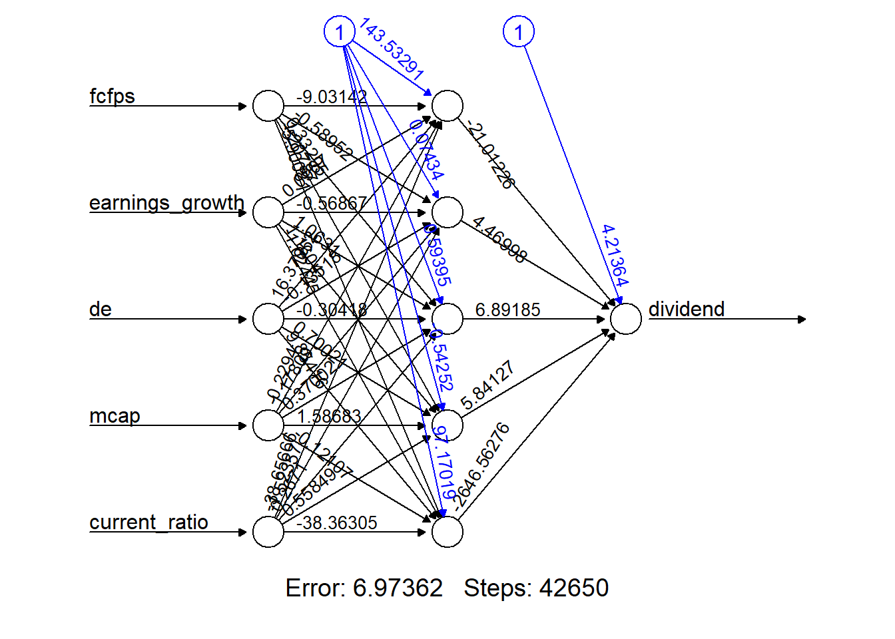

4 Exercise 3: Dividend data
In this example, our goal is to develop a neural network to determine if a stock pays a dividend or not. The dataset is stored under dividendinfo.csv, which includes one response variable and five predictor variables.
dividend(class): A value of 1 indicates that the stock pays a dividend; 0 indicates that the stock that does not pay a dividend.fcfps: Free cash flow per share (in $)earnings_growth: Earnings growth in the past year (in %)de: Debt to Equity ratiomcap: Market Capitalization of the stockcurrent_ratio: Current Ratio (or Current Assets/Current Liabilities)
Task
- Read in the data and perform exploratory analysis. What have you observed?
dividend <- read.csv("dividendinfo.csv")
# some example codes for numerical summaries
summary(dividend)
library(skimr)
skim(dividend)
# some example codes for graphical summaries
pairs(dividend)
libray(GGally)
ggpairs(dividend)
par(mfrow=c(3,2));
invisible(lapply(2:ncol(dividend),function(i) boxplot(dividend[,i]~dividend$dividend)))- Pre-process and split the data to prepare for training and evaluating a neural network.
As all variables are continuous and they have quite different ranges, scale them either using standardisation or min-max normalisation.
While there are built-in functions such as scale to standardise the entire data, the best practice is to split the data into training and test first and then apply standardisation/normalisation. This could avoid information leakage from training to test data.
# Data split
set.seed(1)
idx <- sample(nrow(dividend),0.8*nrow(dividend))
train <- dividend[idx,]
test <- dividend[-idx,]
# option 1: Standardise the data
means <- apply(train[,2:6], 2, mean)
sds <- apply(train[,2:6], 2, sd)
train.std <- scale(train[,2:6])
train.std <- cbind(train[,1],train.std)
test.std <- scale(test[,2:6], means, sds)
test.std <- cbind(test[,1],test.std)
# option 2: Normalise the data
min_max_scale_test <- function(x_tr, x_te){
mins <- apply(x_tr, 2, min)
maxs <- apply(x_tr, 2, max)
x_te <- rbind(mins,maxs, x_te)
x_te <- apply(x_te, 2, function(x) (x-x[1])/(x[2]-x[1]))
x_te <- x_te[-c(1:2),]
}
train.norm <-apply(train[,2:6], 2, function(x) (x-min(x))/(max(x)-min(x)) )
train.norm <-cbind(train[,1],train.norm)
test.norm <-min_max_scale_test(train[,2:6], test[,2:6])
test.norm <-cbind(test[,1], test.norm)- Build a neural network with a single hidden layer, any number of hidden nodes, and the logistic function as the activation function. Interpret the relative importance of variables using the
garsonfunction.
set.seed(1)
nn_di <- neuralnet(dividend~., data=train, hidden=c(5), err.fct="ce", act.fct="logistic", linear.output=FALSE, likelihood=TRUE)
garson(nn_di)
We can see that the variable current_ratio is the one with the strongest relationship with the response variable dividend, followed by de, fcfps and mcap. The variable earnings_growth has the least relationship with dividend.
- Fit the above model multiple times using the argument
repand select the optimal model.
set.seed(1)
nn_di <- neuralnet(dividend~., data=train, hidden=c(5), err.fct="ce", act.fct="logistic", linear.output=FALSE, likelihood=TRUE, rep=5)
# plot(nn_di)
plot(nn_di, rep="best")
From the plots (plot(nn_di)), we can see that the optimisation algorithm stops at different iterations (from Steps) and lead to differnt cross-entropy loss (from Error). In general, training the network longer decreases the cross-entropy loss. However, this decrease takes place on the training data set and may not generalise to the test. In other words, training the model longer may increase the risk of overfitting.
To select the optimal model, we could look at the AIC and BIC values.
## [1] 3## [1] 3AIC and BIC agree in this case and they both choose the third repetition.